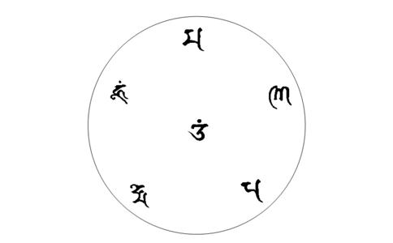

王骧陆师为大众灌顶传法之开示一九三九年丁丑同人敬录
（一）修 我们人的一生中，常有病苦缠身，或有忧郁愁闷，难以自拔自慰。有人甚至会出现各种恐怖、错乱，这全是由于心不安宁的缘故，只要心安宁，心定就能生慧，慧开之后，再来察视世上一切成败、利钝、是非、得失、富贵贫贱、
此法已传无数人，今特再明白开示，以利有志之士，使未发心者，得以发心，已发心者，得以精进，已精进者，得以修证；至于有病之人，仗观音大慈大悲之力，可以勿药而愈，其病已深邃寿缘有限者，亦可早种福田，使其离恶道之苦，或可挽回万一；对于一些鬼迷邪祟等夙业者亦可以因此解除；还有一些因为修持
总之，人生百年弹指而过，及早
六字大明咒咒文：嗡（ong）嘛（ma）呢（ni）叭（bei）咪（mei）吽（hong）
此咒又名最胜观音大士心咒，其利益如下：（1）降魔，（2）
此咒即是
此咒在西藏只传六字咒音，不轻传手印，藏音读为“嗡马呢叭美吽”；蒙古读为“嗡吗呢呗特麦吽”，诺那大师又于“吽”下加一个“舍”（音sei——整理者注）字，无手印，取其速成就之意；大愚阿阇黎正音为“嗡吗尼呗美吽”，兼取蒙古读音短可速成之长处，同时传大莲华手印，此印即召请
六字大明咒的表法，用六字表法即以
得法后先将咒念熟，然后上座修持。
上座前：（1）净手，（2）设备一切，（3）
上座有八忌：（1）忌风处坐，（2）忌饱后坐，饭后一个半小时为宜，（3）忌下座即解大小便，必须过十分钟后才可以解，（4）忌贪坐，一时高兴多坐，以后易退转，以每天一座，最多二座，每座一至二小时为宜，（5）忌大声持诵，免伤气，要金刚持（唇动无声，自己听见），（6）忌身体多动，必致腰疼，伸腰要慢，身体不必过于正直，（7）忌求见光见佛，（8）忌有幻象时执取生疑，如闻妙香妙音，生
此法有手印直证无相门，以心灵为主，不必观光观字，与藏密修法不同。
修法三要：
一要在上座时手印不能散开，此是身密，以此戒杀、盗、淫身三恶业；
二要口持咒勿停，不可说话，为口密，以此戒口四恶业；
三要心空如佛，自己即是四臂观音，观一切众生如醉、病之佛，一醒即愈，同体不二，此是意密，以此戒贪瞋痴的意三恶业。
此法中
修此法，于平时用功最为切要，时时注意：
（1）不许犯杀、盗、淫、妄诸罪业，改除习气，否则纵
（2）不许起贪瞋痴诸邪见，时时求开智慧，处处观空、学习布施。
（3）不许轻慢他法及未修之人，应当平等慈视，不可求
（4）常念孝敬观世音菩萨及历代传法大师的慈悲，并尊重自己的
（5）当尽孝悌忠义诸人伦
（6）修法者应供四臂观音像一尊，若无有观音，其他妙相也可以，如实无力，不供也可，因为有众生处即有佛。
（7）修时手印要用黄布或其他净布盖上，勿与未修人、儿童结印嬉戏，念咒以音准为要。
修时杂念纷起，可能会觉得比平时还多些，此是好的，是进步的表现，不是坏，切勿疑而中止。只要不理，一心顾到咒，自然会心思安谧而心定。不可硬求无念，尤其是初学时，无念便是压迫，久之如同木石，也是一病。应当有念，只是不著不缘，如畅通大道，一切车马行人不是不来往，不是不见不闻，而是不留不住，这才叫作无念。
（四）病家注意此法本不为治病开设，但心定则气和血旺，百病自可消解。此六字“嗡”字去除一切病，“嘛”字除热病，“呢”字除气病，“叭”字除痰病，“咪”除寒病，“吽”除胆病，从这个角度讲，病者修此也相宜，凡失眠、高血压、脑病、肝胃、心血管、怔忡、麻木以及妇科等诸症都有较显著效果，宜注意以下各方面：
（1）不问何病，总以保养心脏为主，其法可分开源节流二种，不动肝火，安心宁神，气和血旺，是谓开源；思虑少，恼怒不生，则气血不耗，是谓节流。能开源节流，自然长寿，每日修此法，必可息心平气增长血球，但在坐时如身体感觉不适或老病复发，这是在拔除夙病伏根，有好处，这与发病不同。时间稍长自然会愈。切勿生疑而中止，应当发大愿，念曰：“我修此法为解一切夙业，旧病虽来我生欢喜，从此拔根，愿天下一切同病，我皆代受其苦，我如修法有成必普度一切众生，使皆明心成佛，永断诸病苦。”每日上座前发此大愿，切勿忘记。此法以一百天为期，必得奇效，修满千日，必证得三昧定。
（2）上座后要忘记自己是病人，不要想着自己的患病处，否则会气血凝聚，病难除去。
（3）下座后以少气恼为主，忌食葱蒜，忌闻好香，因为此物易于动肝；鱼、肉也宜少食，此物易于动欲，心多思欲与法不相应；平时遇事以忍为贵，想到皆为自己夙业冤报，应当承受，通过修法予以解除，逢凶化吉。
（4）修此法不必择时择地择向，只要一心恭敬即可。妇女可日日修，不要间断。老人修此法更妙，患老年腰腿疼
如法修满一百日后，如家中有病人，可结印念咒一百零八遍或千遍，加入净开水中使病人服下，皆能见效，若病人能自念予以配合，效果更好。